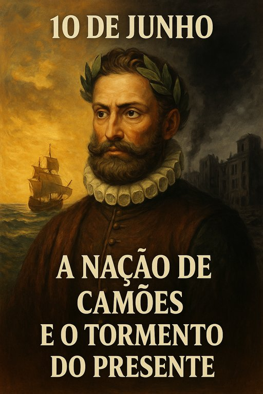

Publicado em 2025-06-10 10:43:31
Neste dia em que se celebra Portugal, as Comunidades Portuguesas espalhadas pelo mundo e Luís de Camões, autor maior da nossa identidade, há que parar. Parar e pensar. Parar e sentir. Parar e lembrar.
Porque houve um tempo em que Portugal era grande, não apenas nas dimensões do império que o mar desenhava, mas na ousadia de sonhar com mundos novos. Um tempo em que os nossos navegadores rasgavam horizontes e Camões eternizava em versos a alma indomável de um povo:
"E entre gente remota edificaram
Novo Reino, que tanto sublimaram."
Hoje, resta-nos esse eco. Uma memória embaciada por décadas de promessas falsas, de políticas cegas, de lideranças ausentes e interesses pequenos. De um Estado que, em vez de servir o povo, o subjuga. De uma classe política que, ao invés de elevar a Nação, trai o seu voto, esvazia os seus sonhos, transforma a esperança em cansaço e a vida num tormento diário.
Portugal tornou-se um país de filas e formulários, de impostos sufocantes, de juventude exilada. Um país que exporta talento e importa mediocridade. Que transformou a coragem em resignação, a rebeldia em silêncio, a cultura em espetáculo fútil.
"Mudam-se os tempos, mudam-se as vontades,
Muda-se o ser, muda-se a confiança..."
E no entanto, Camões vive. Vive nos que ainda acreditam. Nos que constroem sem pedir favores. Nos que inovam sem apoio. Nos que escrevem, sem medo, a verdade. Nos que amam esta pátria mesmo quando ela parece não os amar de volta.
Neste 10 de Junho, não festejamos com júbilo, mas com memória e verdade. Porque amar Portugal não é fingir que tudo está bem — é exigir que seja digno do seu povo.
A esperança não morreu. Ela vive em cada pequeno gesto de cidadania, em cada ideia nascida longe do poder, em cada português que, aqui ou na diáspora, recusa a mediocridade como destino. Há um novo Portugal possível. Não de discursos, mas de ação. Não de elites, mas de cidadãos.
A paciência do povo não é eterna. A história não absolve os que traem o seu tempo. Cuidado, senhores do poder, porque a brisa mansa pode tornar-se tempestade — e o povo, um dia, pode decidir levantar-se, não com armas, mas com consciência. E quando isso acontecer, nem os palácios, nem as mordomias, nem os aparelhos partidários vos irão proteger.
"Cantando espalharei por toda parte
Se a tanto me ajudar o engenho e arte..."
Portugal ainda pode renascer. Mas só o fará se for o povo a escrevê-lo — como Camões escreveu o seu tempo, com coragem, com amor, e com dor.
Artigo escrito por Francisco Gonçalves e Augustus Veritas (c)
Imagem cortesia de OpenAI (c)
Excerto:
Neste 10 de Junho, dia em que celebramos a pátria, as comunidades e o génio de Camões, não há só lugar para aplausos — há também espaço para memória e verdade. Portugal foi outrora farol do mundo, mas hoje cambaleia entre promessas quebradas e sonhos adiados. A grandeza de outrora jaz esquecida sob as ruínas de um Estado que esqueceu o seu povo. E ainda assim, entre os escombros do presente, renasce uma esperança — aquela que vive nos que ainda não desistiram de Portugal. Que este dia sirva, pois, de reflexão e aviso: o povo está a despertar.